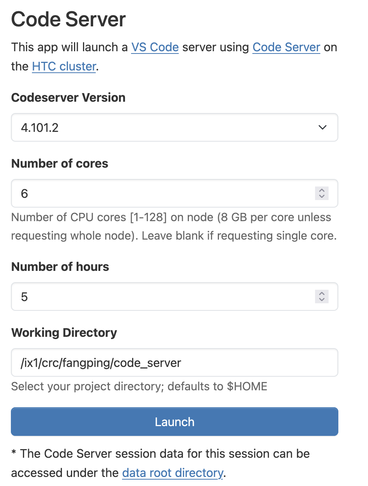
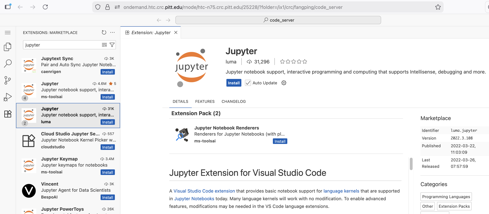
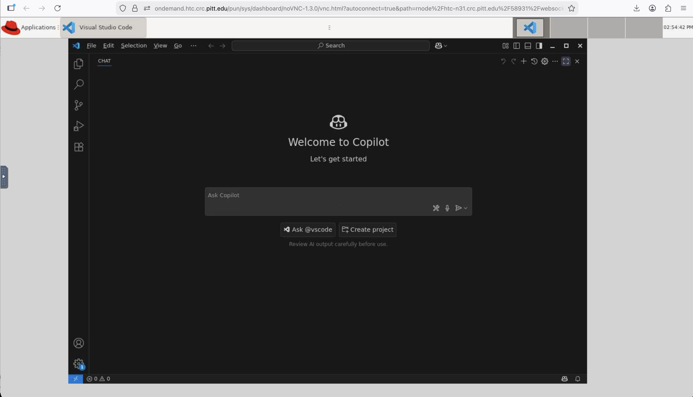

Remote Development with VS Code¶
You can use Visual Studio Code with CRCD in three ways. Pick based on how much setup you want and whether you'd rather work in a browser or in your own local VS Code:
| Method | Where VS Code runs | Best when |
|---|---|---|
| Code Server | In your browser, via Open OnDemand | You want the quickest start with nothing to install |
| VS Code via VNC | In a browser desktop (TurboVNC), via Open OnDemand | You want the full desktop VS Code UI in the browser |
| Remote tunnel | Your local VS Code, connected to a compute node | You want your own VS Code, extensions, and settings against cluster resources |
The first two run through Open OnDemand and need no local setup. The tunnel is the most powerful but the most involved.
Code-Server¶
Code-Server runs VS Code on a compute node and serves it to your browser.
Once you login to https://ondemand.htc.crc.pitt.edu using your Pitt credentials (username in lowercase + Pitt password), you can click on Code Server from the Pinned Apps to bring up the job submission form

Installing extensions¶
Install extensions from the Extensions sidebar (only needed the first time, or
when you need new ones). For example, search "Jupyter" in Extensions:
Marketplace and click Install; extensions are stored under
~/.local/share/code-server. You can then open Jupyter notebooks.

Using a conda environment¶
To run notebooks against a specific conda environment, open the Command Palette,
type Python: Select Interpreter, and enter the path to that environment's
python. For example, the cell2location environment installed at
/software/rhel9/manual/install/cell2location/0.1.4/python3.11/bin/python.
(Install the Python extension first if you haven't.) See
Python for creating your own environments.
VS Code via VNC¶
Log on to ondemand.htc.crc.pitt.edu, click Interactive Apps → VSCode on
htc, choose a version, cores, and hours, then Launch. VS Code runs inside a
TurboVNC desktop session in your browser.

Remote tunnel¶
This connects the VS Code installed on your own machine to a CRCD compute node using the Remote-SSH extension.
This is the advanced option
It requires SSH key setup and an SSH config. If you just want VS Code quickly, use Code Server above.
Prerequisites
- The latest VS Code on your local machine.
- The Remote Development extension pack.
One-time setup¶
1. Set up passwordless SSH. The tunnel needs your public key installed on the
login node (so you connect without a password) and a key in your cluster home
directory that the compute-node sshd will use as its host key. Both are covered
on Passwordless SSH — follow it to
create an ed25519 key pair before continuing.
2. Add an SSH config. On your local machine, add to ~/.ssh/config (replace
<username> with your Pitt username):
Host htc
HostName htc.crc.pitt.edu
User <username>
ControlMaster auto
ControlPath ~/.ssh/master-%r@%h:%p
Host htcx
ProxyCommand ssh htc 'nc $(squeue --me --name=tunnel --states=R -h -O NodeList,Comment)'
StrictHostKeyChecking no
User <username>
Windows
If ControlMaster isn't available on your machine, omit the ControlMaster
and ControlPath lines from the Host htc block; the rest is unchanged.
3. Create the tunnel job script. On the cluster, create ~/tunnel.sbatch:
#!/bin/bash
#SBATCH --output="tunnel.log"
#SBATCH --job-name="tunnel"
#SBATCH --time=4:00:00
#SBATCH --cpus-per-task=2
#SBATCH --mem-per-cpu=8G
module load python # any Python module works (see Discovering Software); used only to find a free port
# find an open port and record it in the job's Comment field
PORT=$(python -c 'import socket; s=socket.socket(); s.bind(("", 0)); print(s.getsockname()[1]); s.close()')
scontrol update JobId="$SLURM_JOB_ID" Comment="$PORT"
# start an sshd on that port, using your key as the host key
echo "Starting sshd on port $PORT"
/usr/sbin/sshd -D -p ${PORT} -f /dev/null -h ${HOME}/.ssh/id_ed25519
Connecting (each time)¶
From your local terminal, ssh htc, then start the tunnel job:
[user@login1 ~]$ sbatch tunnel.sbatch
Submitted batch job 1383495
[user@login1 ~]$ squeue -u $USER
JOBID PARTITION NAME USER ST TIME NODES NODELIST(REASON)
1383495 htc tunnel user R 0:17 1 htc-1024-n0
Once the job is running, open VS Code locally and connect via Remote Explorer
using htcx as the SSH target.
Requesting a GPU¶
Add a gpux host to your local ~/.ssh/config:
Host gpux
ProxyCommand ssh htc 'nc $(squeue -M gpu --me --name=tunnel --states=R -h -O NodeList,Comment)'
StrictHostKeyChecking no
User <username>
And change the #SBATCH lines in ~/tunnel.sbatch to target the GPU cluster:
#SBATCH --time=0-01:00:00
#SBATCH --cpus-per-task=2
#SBATCH --cluster=gpu
#SBATCH --partition=a100 # a100 | l40s | h200 | ... (see the GPU hardware page)
#SBATCH --gres=gpu:1
Then connect using gpux as the SSH target instead of htcx. See the
GPU cluster page for available partitions.
Related¶
-
Browser access
Code Server, VNC, and other apps through Open OnDemand.
-
Set up SSH keys
Passwordless SSH, required for the remote tunnel.
-
Interactive sessions
Other ways to get a shell on a compute node.